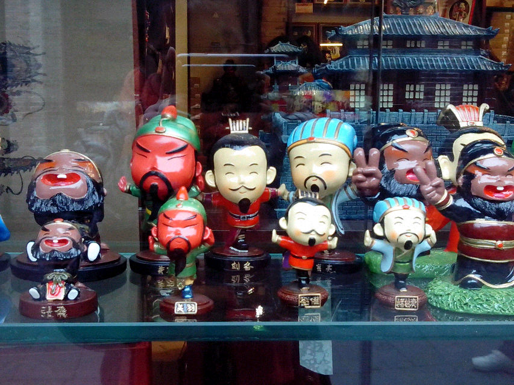

软陶人偶
制作软陶公仔是一门古老而又年轻的艺术。说古老，是因为制陶术在我国已有数千年的历史，勤劳智慧的古人制作出的精美陶器至今让后人叹为观止；说年轻，是因为这门艺术随着时代的发展，在选材、制作流程及作品创意上都已融入了许多个性元素。一些怀着童趣之心的设计者们加入进来，把真人照片中的一颦一笑艺术地加以夸张，用五颜六色的陶泥塑出各种表情与姿态。因为有了生活的真实情节，这些卡通化的陶偶被赋予了灵性和天真，成为童话故事里的主角。
软陶公仔的形态多种多样，除了逼真的明星、体态优雅的美女，也有和蔼可亲的老人，还有天真活泼的孩子，千姿百态，富有情趣。根据真人的一张正面照片和一张侧面照片，经过设计者的艺术夸张、用彩色陶泥塑造和烧制，栩栩如生的陶偶就应运而生。这种个性化陶偶最早是在欧洲出现的，后来传到中国，先在台湾风靡起来，被称为“个性公仔”，近两年开始在北京、上海等大城市出现。